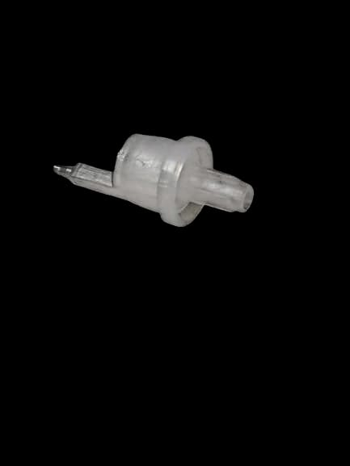

Product Specifications
| Product Type | 18mm Dropper Only |
|---|---|
| Brand | MS Polymers |
| Material | Plastic |
| Colour | White |
| Application | Homeopathic & Pharma Industry |
| Type | Dropper |
| Size | 18mm |
| Dimension | 18mm |
| Shape | Round |
| Usage | For 30ml, 50ml, 100ml Glass Bottles |
| Packaging | Bag |
| Food Grade | Yes |
Product Description
The 18mm Dropper manufactured by MS Polymers is specially designed for use with pharmaceutical and homeopathic bottles. Made from high-quality plastic material, it ensures smooth liquid dispensing and reliable performance.
This dropper is compatible with 30ml, 50ml, and 100ml glass bottles and is ideal for accurate dosage applications. The round design provides easy fitment and secure usage.
Manufactured under strict quality standards, the dropper is food grade, durable, and suitable for bulk packaging and industrial requirements.